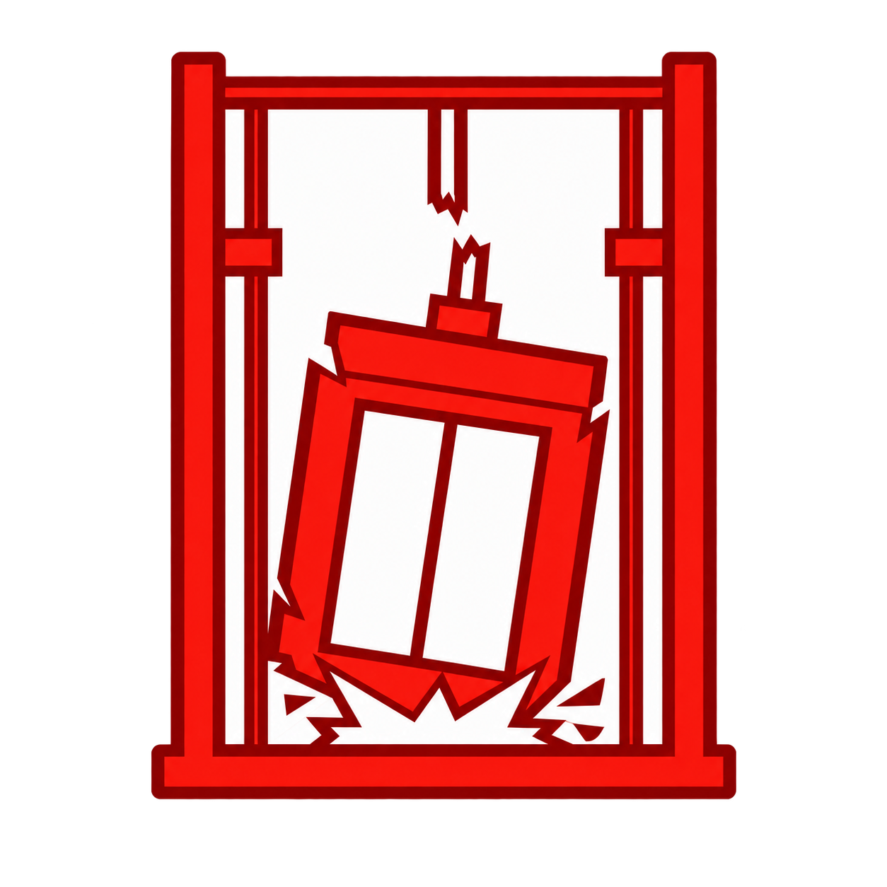
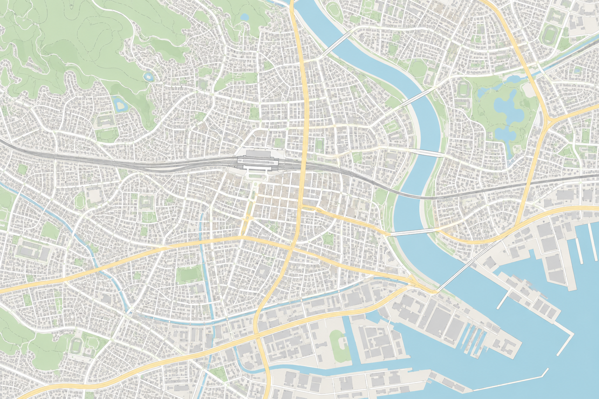

エレベーター事故マップ
霧原市 昇降機事故記録アーカイブ
このサイトについて
地図の使い方
↗
検索
発生年
すべての期間
2020年以降
2010〜2019年
2009年以前
霧原市全域

事故記録
18
件
|
霧原市
＋
−
⌖
N
エレベーター事故の記録
アイコンを選択して詳細を表示
500 m
地図・記録 © 霧原市昇降機事故アーカイブ
i
過去の事故の記録を掲載しています。現在の設備の安全性を示すものではありません。
最終更新：2026.09.18
×
閉じる